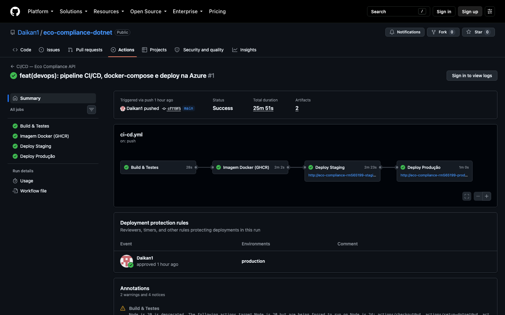
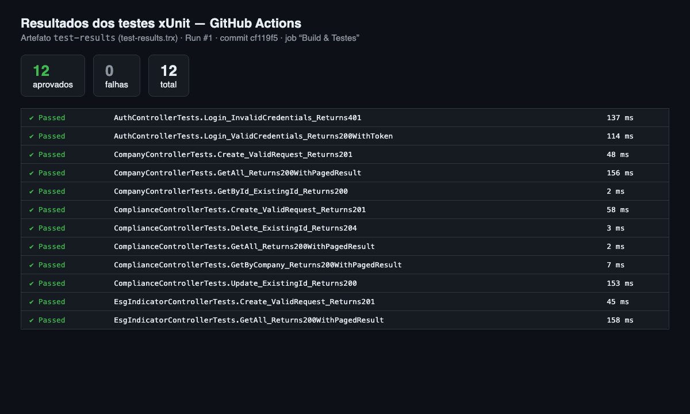
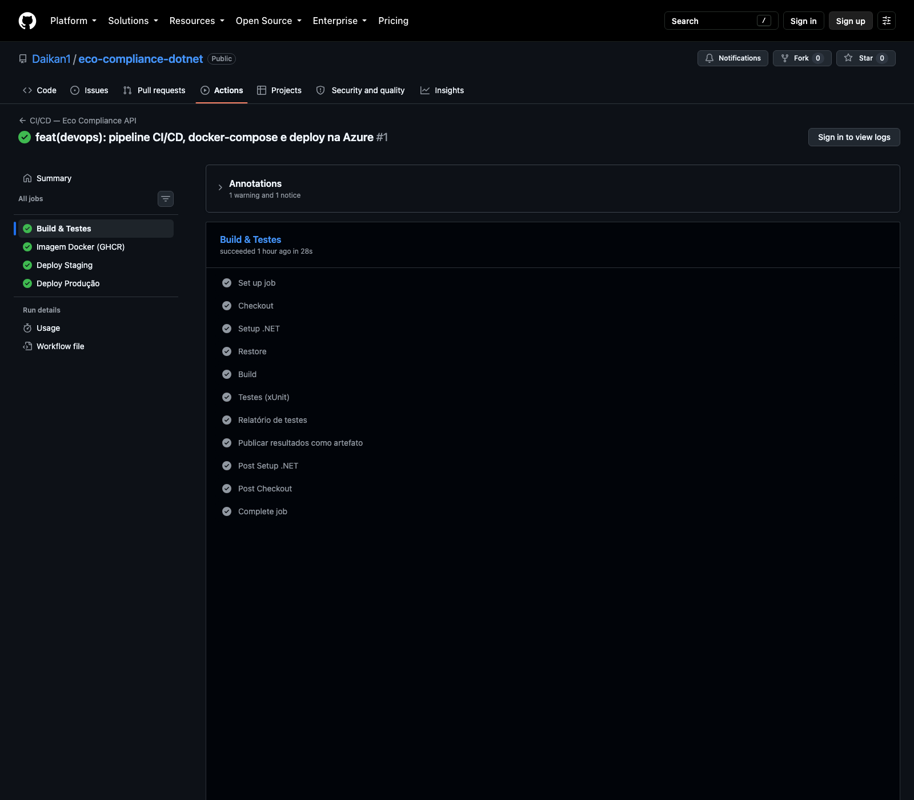
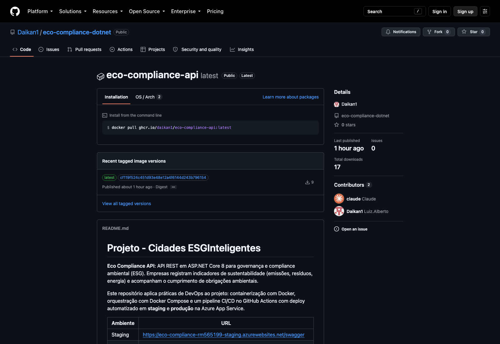
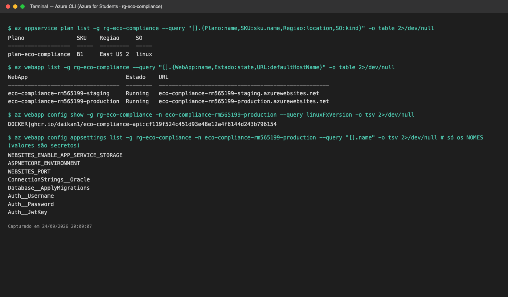
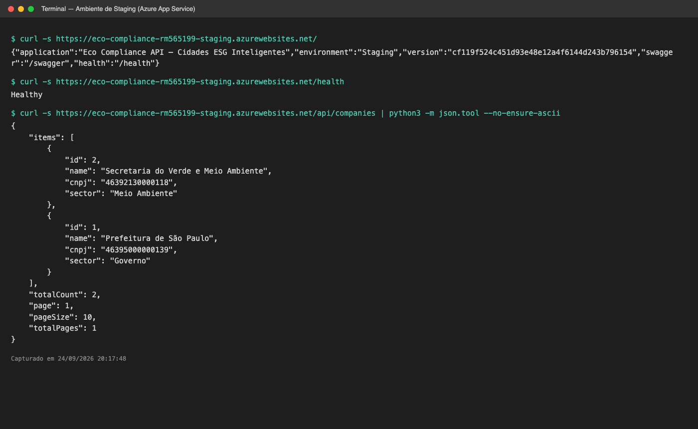
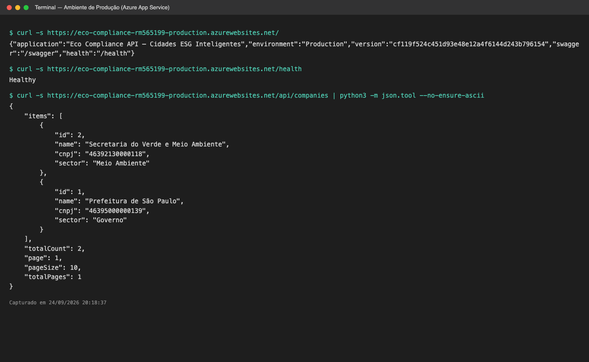
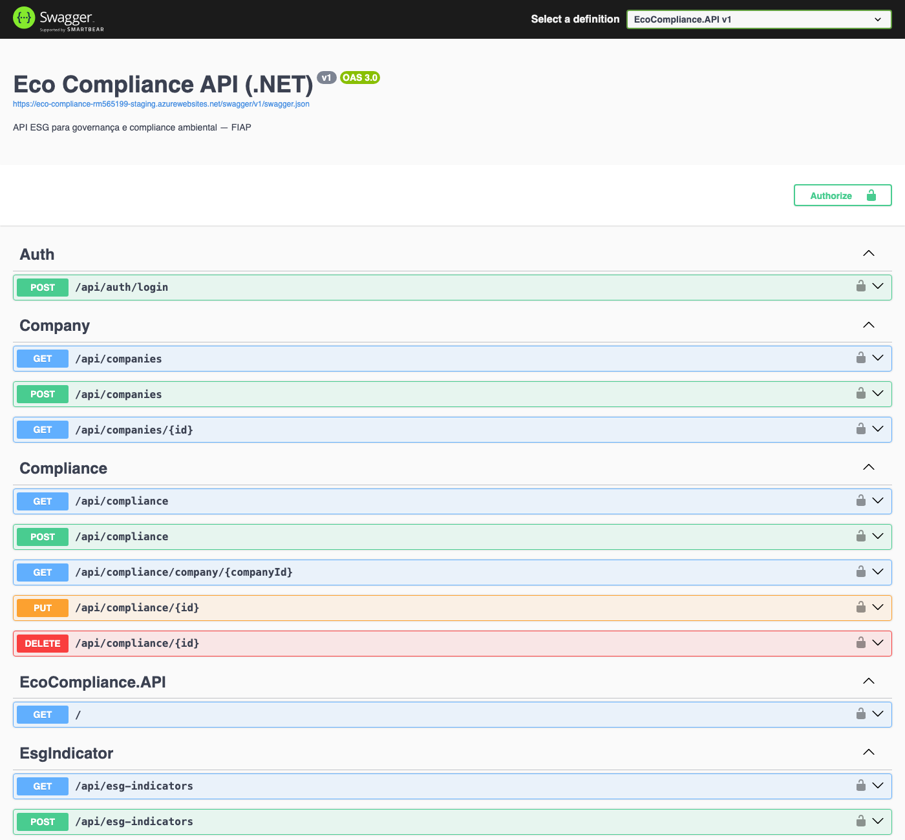
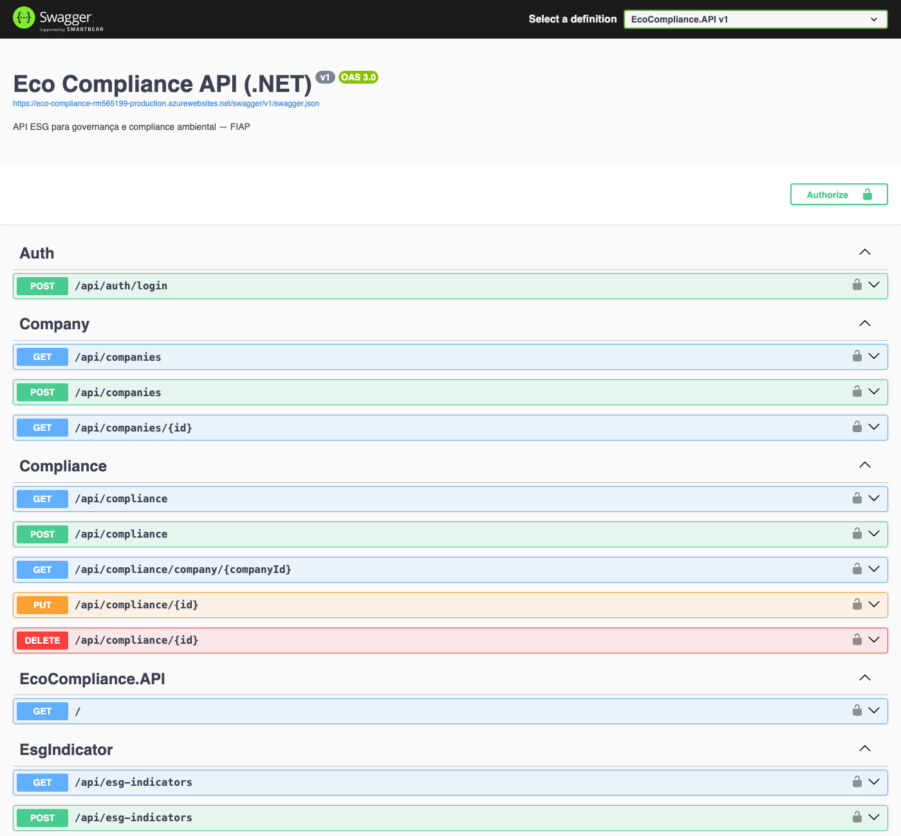
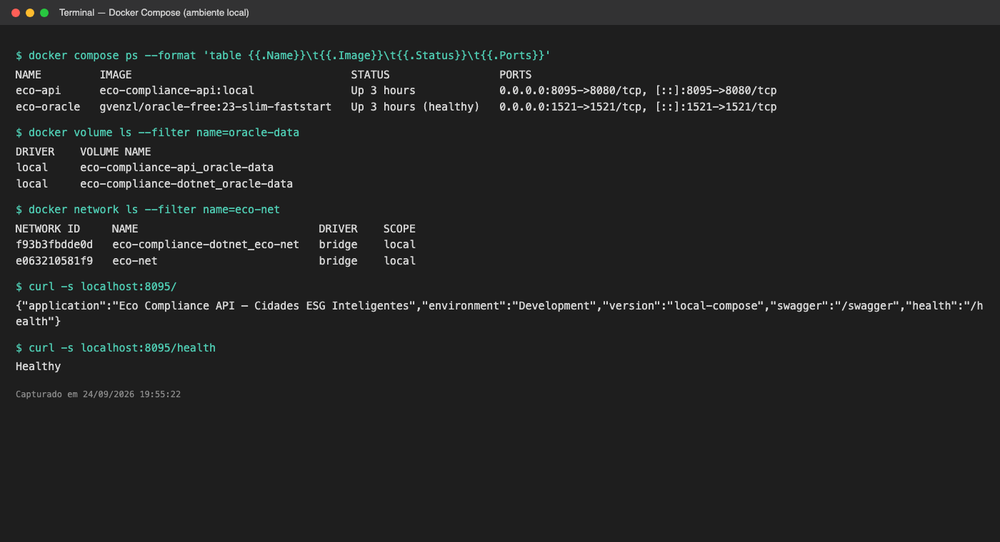

| Integrante | Luiz Alberto Silva de Santana (RM565199) |
| Aplicação | API REST em C# / ASP.NET Core 8 para compliance ambiental (ESG) |
| Repositório | github.com/Daikan1/eco-compliance-dotnet |
| Pipeline | GitHub Actions: build, testes, imagem Docker, staging e produção |
| Staging | eco-compliance-rm565199-staging.azurewebsites.net |
| Produção | eco-compliance-rm565199-production.azurewebsites.net |
| 1. Descrição do pipeline: ferramenta, etapas e lógica |
| 2. Docker: arquitetura, comandos e imagem criada |
| 3. Prints do pipeline rodando (build, testes e deploy) |
| 4. Prints dos ambientes staging e produção funcionando |
| 5. Desafios encontrados e como foram resolvidos |
| 6. Checklist de entrega |
Ferramenta: GitHub Actions (.github/workflows/ci-cd.yml). O pipeline é disparado a cada push na branch main, em pull requests e manualmente (workflow_dispatch). A imagem vai para o GitHub Container Registry (GHCR), e o deploy é feito no Azure App Service (Web App for Containers, Linux), com um Web App por ambiente.
:sha e :latest| Etapa | O que faz |
|---|---|
| Build & Testes | dotnet restore, dotnet build -c Release e dotnet test com logger TRX. Os resultados são publicados como artefato (test-results). Se algum teste falhar, o pipeline para aqui. Em pull requests, só esta etapa roda. |
| Imagem Docker (GHCR) | Faz o build com o Dockerfile multi-stage, usando o cache de camadas do Actions. O SHA do commit entra na imagem como APP_VERSION, e a imagem é publicada em ghcr.io/daikan1/eco-compliance-api. |
| Deploy Staging | azure/webapps-deploy@v3 aponta o Web App de staging para a imagem :<sha>. O smoke test consulta GET / até a resposta trazer o SHA novo e valida GET /health. Se a versão não subir em 5 minutos, o job falha. |
| Deploy Produção | Só roda se staging passou. O GitHub Environment production exige aprovação manual de um revisor. A mesma imagem validada em staging é promovida, e o smoke test se repete. |
| Imagem imutável | O artefato é construído uma única vez. Staging e produção recebem exatamente a mesma imagem :<sha>; só mudam as variáveis de ambiente. |
| Promoção com gate | O deploy em produção depende do sucesso de staging e de aprovação humana. |
| Segredos fora do código | Cada GitHub Environment guarda AZURE_WEBAPP_PUBLISH_PROFILE (secret) e AZURE_WEBAPP_NAME (variável). A connection string, a senha de admin e a chave JWT ficam nas App Settings de cada Web App. |
| Rastreabilidade | GET / informa o ambiente e o commit em execução, o que permite verificar qual versão está em cada ambiente. |
| Infraestrutura como script | scripts/azure-setup.sh provisiona Resource Group, App Service Plan (B1, East US 2), os dois Web Apps, as App Settings e os GitHub Environments. |
api (build do Dockerfile, porta 8080): sobe só depois que o Oracle está healthy e aplica as migrations do EF Core automaticamente.
oracle (gvenzl/oracle-free:23-slim-faststart, porta 1521): Oracle 23ai Free com health check e dados persistidos no volume.
eco-compliance-rm565199-staging (ASPNETCORE_ENVIRONMENT=Staging)
eco-compliance-rm565199-production (ASPNETCORE_ENVIRONMENT=Production)
Os dois executam a imagem do GHCR e se conectam ao Oracle da FIAP (oracle.fiap.com.br).
FROM mcr.microsoft.com/dotnet/sdk:8.0 AS build
WORKDIR /src
COPY ["EcoCompliance.API/EcoCompliance.API.csproj", "EcoCompliance.API/"]
RUN dotnet restore "EcoCompliance.API/EcoCompliance.API.csproj" # camada cacheada
COPY . .
WORKDIR "/src/EcoCompliance.API"
RUN dotnet publish "EcoCompliance.API.csproj" \
-c Release -o /app/publish /p:UseAppHost=false --no-restore
FROM mcr.microsoft.com/dotnet/aspnet:8.0 AS final
ARG APP_VERSION=local
WORKDIR /app
EXPOSE 8080
ENV ASPNETCORE_ENVIRONMENT=Production ASPNETCORE_HTTP_PORTS=8080 APP_VERSION=${APP_VERSION}
COPY --from=build /app/publish .
USER $APP_UID # sem root
ENTRYPOINT ["dotnet", "EcoCompliance.API.dll"]
$APP_UID).dockerignore exclui .env, appsettings.Development.json, bin/obj e docs| Repositório | ghcr.io/daikan1/eco-compliance-api |
|---|---|
| Tags | latest, cf119f524c45… |
| Base | mcr.microsoft.com/dotnet/aspnet:8.0 |
| Tamanho | ≈ 94 MB compactada |
| Plataforma | linux/amd64 (build no runner ubuntu do GitHub) |
cp .env.example .env # variáveis do ambiente local docker compose up -d --build # build da imagem + sobe Oracle e API docker compose ps # status dos serviços (oracle healthy, api up) docker compose logs -f api # acompanha migrations e startup docker build -t eco-compliance-api . # build avulso da imagem docker pull ghcr.io/daikan1/eco-compliance-api:latest docker compose down [-v] # derruba (e remove o volume do banco)


test-results.trx publicado pelo job "Build & Testes": 12 aprovados, 0 falhas.

latest e o SHA do commit.
ghcr.io/daikan1/eco-compliance-api:cf119f5…. Só os nomes das App Settings são exibidos; os valores são secretos.
GET / retorna environment: Staging e o SHA do commit, /health retorna Healthy e /api/companies lista os dados do Oracle.
environment: Production.


eco-api e eco-oracle (healthy), volume oracle-data, rede eco-net e API respondendo.| Desafio | Solução |
|---|---|
| Tabelas não eram criadas em um banco novo | A migration InitialCreate não tinha os atributos [DbContext] e [Migration], então o EF Core não a encontrava. Os atributos foram adicionados, junto com a opção Database__ApplyMigrations para aplicar as migrations no startup. O script é idempotente. |
| Oracle XE sem imagem para Apple Silicon (ARM) | A imagem gvenzl/oracle-xe só existe para amd64 e fica lenta com emulação. Foi trocada por gvenzl/oracle-free:23-slim-faststart, que é multi-arquitetura, com health check para a API só subir com o banco pronto. |
| Senha real do banco entrava na imagem | O appsettings.Development.json era copiado para dentro da imagem. O .dockerignore passou a excluí-lo, e as credenciais agora entram só por variáveis de ambiente. |
| Sem evidência visual em staging e produção | O Swagger só era habilitado em Development. Ele foi liberado em todos os ambientes, e foram criados /health e GET / (ambiente + versão), que também são usados pelo smoke test. |
| Restrições da assinatura Azure for Students | A região brazilsouth estava bloqueada por política, então foi usada eastus2. O provedor Microsoft.Web não estava registrado e foi registrado com az provider register. O deploy via publish profile exigia habilitar a autenticação básica do SCM, o que foi automatizado no script. |
| Conta Oracle bloqueada (ORA-28000) | Uma senha digitada incorretamente nas App Settings gerou falhas de login repetidas e bloqueou a conta. A senha foi redefinida com a FIAP, e o script set-db-password.sh foi criado para ler a senha sem eco, pedir confirmação e atualizar os dois ambientes de forma consistente. |
| Instabilidade do Oracle da FIAP (ORA-50000 timeout) | O smoke test do pipeline valida a aplicação (/health e versão) sem depender do banco externo, então uma instabilidade da FIAP não reprova o deploy. As validações com dados foram repetidas quando o banco estabilizou. |
| Porta 8080 já ocupada na máquina local | A porta publicada passou a ser configurável no .env (API_PORT), sem alterar o compose. |
| Git travando na pasta do projeto | A Área de Trabalho estava no iCloud com "Otimizar armazenamento", e os arquivos ficavam só na nuvem. A pasta foi marcada como "Manter Download". |
| Item | OK |
|---|---|
| Projeto compactado em .ZIP com estrutura organizada | ☑ |
| Dockerfile funcional | ☑ |
| docker-compose.yml ou arquivos Kubernetes | ☑ |
| Pipeline com etapas de build, teste e deploy | ☑ |
| README.md com instruções e prints | ☑ |
| Documentação técnica com evidências (PDF ou PPT) | ☑ |
| Deploy realizado nos ambientes staging e produção | ☑ |
| Aplicação | C#, .NET 8, ASP.NET Core Web API, Entity Framework Core 8, Oracle.EntityFrameworkCore, JWT, Swagger |
| Testes | xUnit, Moq |
| Containers | Docker (multi-stage), Docker Compose, Oracle Database 23ai Free |
| CI/CD | GitHub Actions, GitHub Environments (aprovação manual), GitHub Container Registry |
| Nuvem | Azure App Service (Web App for Containers, Linux), Azure CLI, Oracle FIAP |